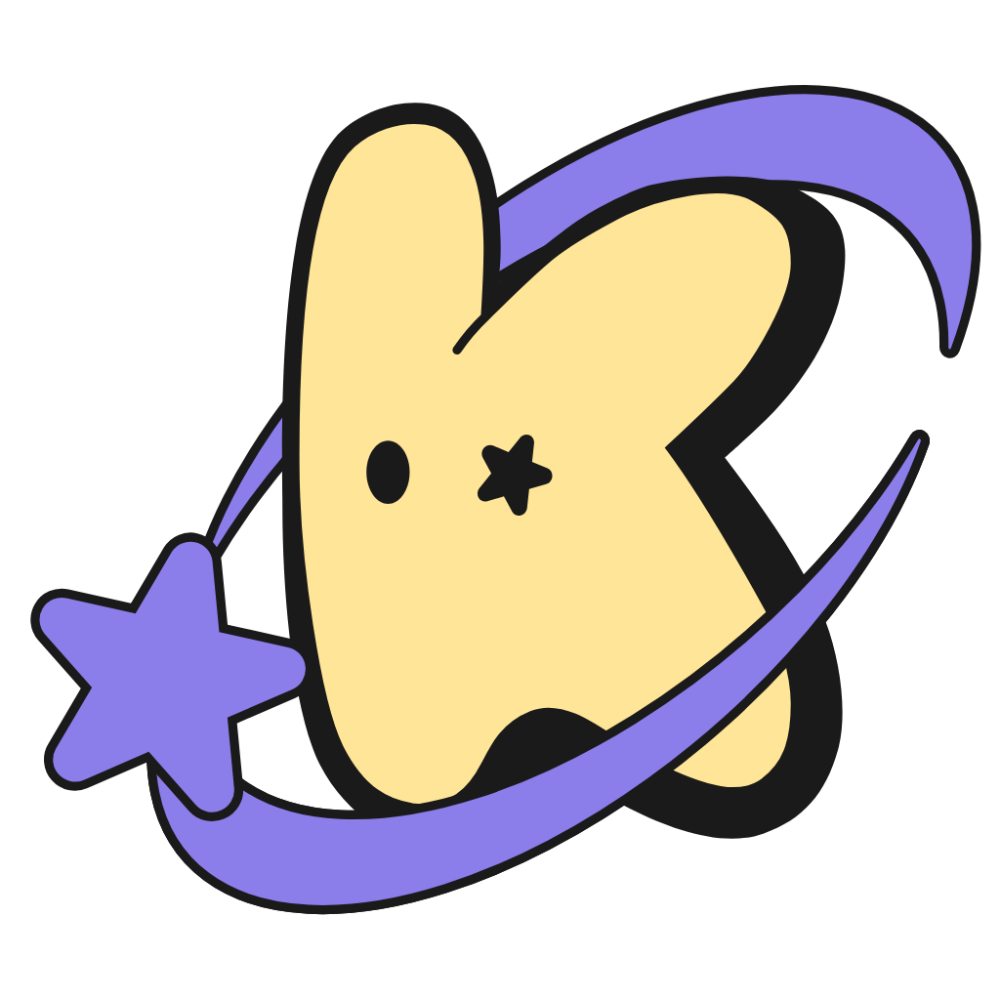
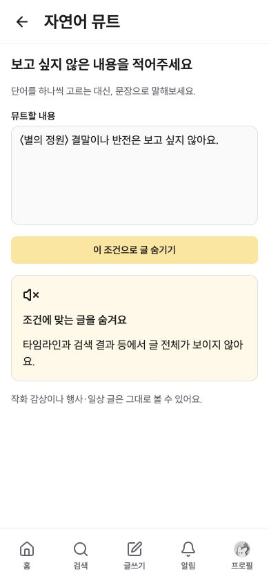
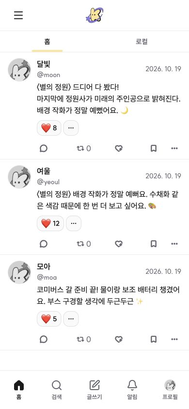
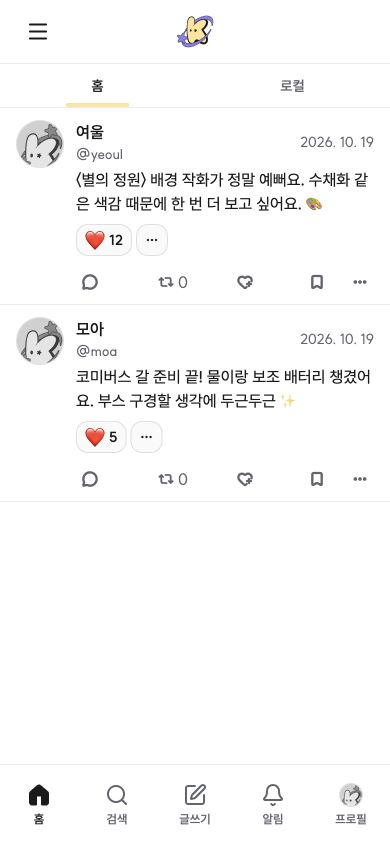
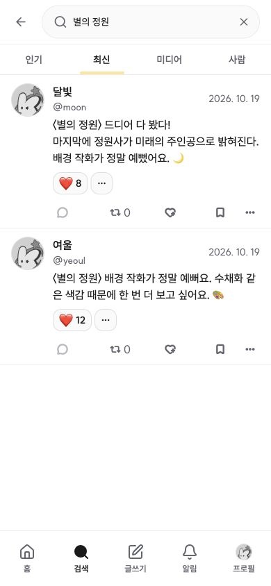
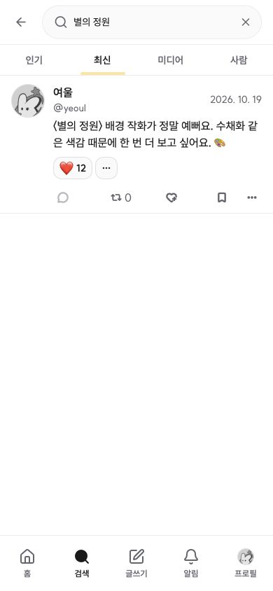

코미버스 · 자연어 뮤트 구상
“〈별의 정원〉 결말이나 반전은 보고 싶지 않아요.”
보고 싶지 않은 글은 목록에서 숨겨요.
조건에 해당하는 글 전체가 타임라인·검색 결과 등에 나타나지 않아요.
01 · 타임라인에서 글 전체 숨김
결말을 담은 글이 목록에서 빠져요. 남은 글은 기존 순서대로 이어져요.
피하고 싶은 내용을 적어요
작품의 결말·반전은 피하고, 다른 감상과 일상 글은 읽고 싶어요.


뮤트 대상: 결말·반전이 담긴 글 전체
적용 전 타임라인
결말 공개, 작화 감상, 행사 준비 글이 함께 보여요.


결말이 담긴 달빛의 글 전체가 숨김 대상이에요.
해당 글이 보이지 않아요
첫 글이 빠지고 아래 글이 올라와, 빈자리 없이 이어져요.


글 자체가 목록에서 빠져요. 같은 작품의 작화 감상과 행사 글은 그대로 남아요.
02 · 검색 결과에서도 글 전체 숨김
같은 조건이 검색 결과에도 적용돼요. 작품을 검색해도 결말을 담은 글은 보이지 않아요.
같은 뮤트 조건을 사용해요
“〈별의 정원〉 결말이나 반전은 보고 싶지 않아요.”
타임라인과 같은 글 숨김 조건이에요.
적용 전 검색 결과
‘별의 정원’을 검색하면 결말 공개 글과 작화 감상이 함께 나와요.


검색어와 일치하더라도 결말을 담은 글은 숨김 대상이에요.
검색에서도 보이지 않아요
결말 공개 글이 결과에서 빠지고, 작화 감상만 남아요.


검색어는 그대로예요. 조건에 해당하지 않는 작화 감상은 계속 볼 수 있어요.